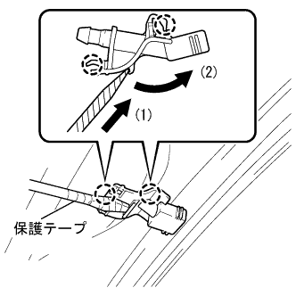
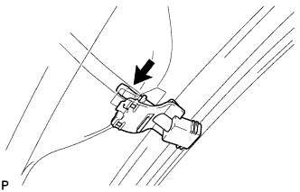
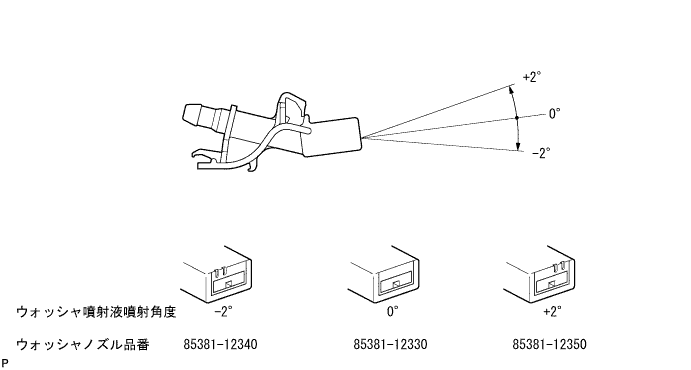

Washer Nozzle Adjustment |
| 1. Adjust Washer Nozzle |
 |
Using a screwdriver with its tip wrapped in protective tape, disengage the 2 claws in the order indicated by the arrows in the illustration, and separate the washer nozzle.
 |
Remove the washer nozzle from the washer hose.
Select and replace the washer nozzle so that the washer fluid spray lands within the standard range.
